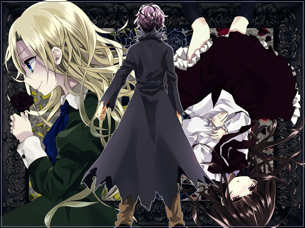
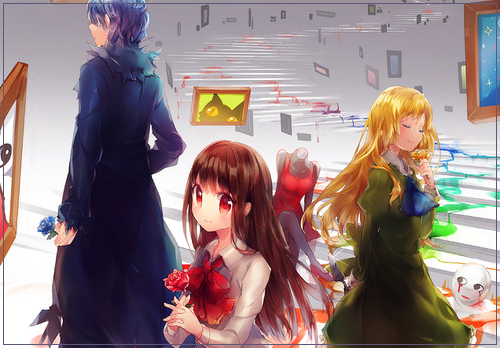

|
 Ib (or "Eve",) is a freeware Japanese psychological horror adventure game by kouri, made in RPG Maker 2000. A young girl named Ib visits an art gallery with her parents. While observing the many exhibits, she suddenly realizes she is alone. And in her search for others, she finds things awry in the gallery... The game is focused on exploration and puzzle-solving. There are no battles, but it may occasionally require some quick reflexes. --from vgperson's blog  Guertena, also known as Guertena Weiss, is the infamous painter in the game, Ib. He painted Mary, as well as the other paintings in Garry and Ib 's adventure. A few is known about his face. Yet, all theories stated that Guertena is either a middle-aged man or an old man. In Ib v.1.04, a portrait of him is displayed, yet his face isn't shown, therefore concluding that Guertena is still a mystery to all. The Fabricated World, one of Guertena's paintings, is a world based on many famous works of art by Guertena. |